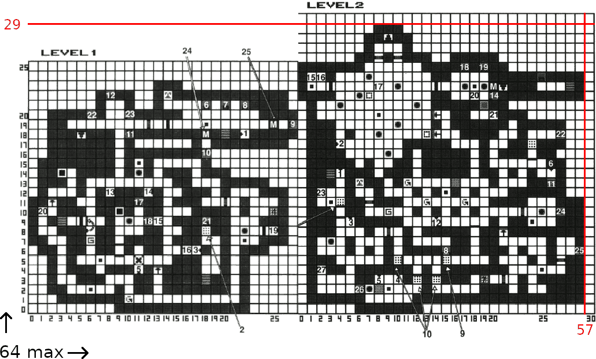
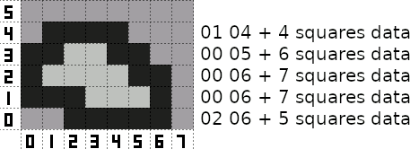
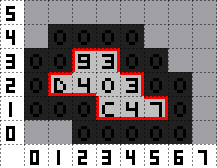
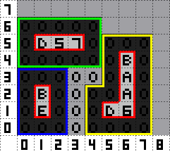
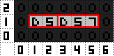

Black Crypt map file format - "bcdfs" file.
----- 1. File structure -----
Game is divided into 13 maps, betwen loading screens.
Each map contains:
Offset data - always 52 bytes
Map data - various size
3950 bytes 00 (space to place items from invetory to floor etc.)
And repeat 13 times.
----- 2. Offset data -----
Offset data appear at the beginning on each map but only in first map offset data is filled.
Offset data in maps 2 - 13 is filled by 52 bytes 00.
Offset data is 52 bytes long = 13 maps * 32bit value. 13 offsets to each map first byte in bcdfs file.
Original Black Crypt bcdfs first offset data:
00 00 00 00 first map adress.
00 00 3A C7 second map adress.
...
00 02 87 36 last map adress.
----- 3. Map data -----
Game uses 13 maps up to 64x64. Many maps is divided to levels and must fit together to this 64x64.
Four levels 32x32 or two 30x50 etc.
First original map, first 7 bytes:
00 00 00 00 1D 00 39
First three 00 are unknown. Sometimes have values.
Next is 00 1D - vertical map size (exacly - logic working), used once at map start
00 - first vertical line on 64x64 map (bottom)
1D - last line on 64x64 map (top) - level 2 max height is 29 (1D hex)
This is only for game logic not map structure itself. Monsters, switches placed on map over this values are not moving etc.
So when map is height 30 just set to 30.
Next 00 39 - horizontal first and last square, used at every line starts
00 - first square in line on 64x64 map (left)
39 - last square in line on 64x64 map (right) - level 1 on left 0-27, level 2 on right 28-57, last square is 57 (39 hex).
Now game reads 58 (0-57) squares data and start next line. Again two bytes 00 39 and 58 squares data.
First map use 00 39 for all lines, but every line can be set independently to save space in file.
Data starts from left bottom corner and goes to right, and from bottom to top.
First map, two levels on 64x64 grid.

Levels place on 64x64 map is designer choice, can be 2 on left and 1 on right, or one above the other.
Example map with independent line length.

----- 4. Square -----
Simple empty (no items, monsters etc.) square with or without walls is 4 bytes long and looks like.
0F F1 00 00
0F F1 00 00 - 4 bits is bitflag square type.
+0 - floor (for automap presentation only)
+1 - wall (for automap presentation only)
+2 - darkness
+4 - "spell failed" square
+8 - water
0F F1 00 00 - always F F
0F F1 00 00 - assigns level number to square, because is many levels on one map and tels game to show correct level number.
Each 64x64 map has own counter. First map Level 1 = 1, Level 2 = 2. Second map Level 3 = 1, Level 4 = 2, Level 5 = 3 etc.
Level number offset is in bcdft file.
0F F1 00 00 - 4 bits is bitflag assign walls to square, each square has own walls.
+0 None
+1 North
+2 East
+4 South
+8 West
0F F1 00 00 - 12 bits is used to set unique item, monster etc. number on 64x64 map sorted from bottom left corner and goes to right.
Each 64x64 map has own counter. If its 000, read next square. If 001-FFF reads item, monster etc. data, then must be 000 to read next square.
----- 5. Map -----
Wall bits for each square on map.

And full map bytecode.
Set vertical first and last line: 00 04
Line 0: 02 06 1FF10000 1FF10000 1FF10000 1FF10000 1FF10000
Line 1: 00 06 1FF10000 1FF10000 1FF10000 0FF1C000 0FF14000 0FF17000 1FF10000
Line 2: 00 06 1FF10000 0FF1D000 0FF14000 0FF10000 0FF13000 1FF10000 1FF10000
Line 3: 00 05 1FF10000 1FF10000 0FF19000 0FF13000 1FF10000 1FF10000
Line 4: 01 04 1FF10000 1FF10000 1FF10000 1FF10000
More levels on map and walls bytecode.

Blue - level 1; Green - level 2; Yellow - level 3.
Each level is invisible to other one. Each level left and bottom square intersection is in game 0 - 0 coordinates.
And full map bytecode.
Set vertical first and last line: 00 06
Line 0: 00 07 1FF10000 1FF10000 1FF10000 0FF00000 1FF30000 1FF30000 1FF30000 1FF30000
Line 1: 00 07 1FF10000 0FF1E000 1FF10000 0FF00000 1FF30000 0FF3D000 0FF36000 1FF30000
Line 2: 00 07 1FF10000 0FF1B000 1FF10000 0FF00000 1FF30000 1FF30000 0FF3A000 1FF30000
Line 3: 00 07 1FF10000 1FF10000 1FF10000 0FF00000 0FF00000 1FF30000 0FF3A000 1FF30000
Line 4: 00 07 1FF20000 1FF20000 1FF20000 1FF20000 1FF20000 1FF30000 1FF3B000 1FF30000
Line 5: 00 07 1FF20000 0FF2D000 0FF25000 0FF27000 1FF20000 1FF30000 1FF30000 1FF30000
Line 6: 00 04 1FF20000 1FF20000 1FF20000 1FF20000
One way wall or wall that can be opened looks that.

Its possible to walk from 2 to 3 because no wall on east, but from 3 to 2 not, wall on west.
Uses floor tile but game renders wall automaticly on automap when find one side of a wall.
----- 6. Items, monsters and structures -----
List of items and explained bytecode is here.
List of monsters and explained bytecode is here.
List of structures and explained bytecode is here.
----- 7. Placing things -----
Placing something in dungeon is a inserting data between squares, its unique number 000-FFF and data what you want to insert.
Higher item number is on top when two or more items ocupied identical place.
Square with War Hammer
0FF1A01B - Square data and unique number 01B
000700003B010000012C007D0000FFFF0000 - War Hammer
0000 - to read next square 0 000
next square
Two or more things on square
0FF1E004 - Square data and unique number 004
000D01354F04000000C80064000700000003 - Scroll of Dispelling
0005 - next unique number 0 005
001200724F0500000041005A0002009E0258 - Water Skin
0006 - next unique number 0 006
003900004016000000000000000000000000 - Alcove
0000 - to read next square 0 000
next square
Number rules changes when container with items is used
0FF1A031 - Square data and unique number 031
001B01DCCF1300FE01F400280 032 03070004 - Backpack, uses next unique number (032) inside to start carrying items in container
0000 - first item in cointainer unique number 0 000 because is set earlier (032)
000D008BCF04000000C8006401C000000003 - Glyph Scroll
0033 - next item in cointainer unique number 0 033
00140220CF0E080200320032000000FA0002 - Apple
0000 - to read next square 0 000
next square
When something is before container, previous rules works, but changed when something is after container
0FF1D04D - Square data and unique number 04D
000501868F13002500C8015E0 04E 00FA0005 - Quiver, uses next unique number (04E) for carrying, not for next item but for first thing outside container
0051 - first item in container have highest unique number of all items in container 0 051
0006018D8F250000000F00190000FFFF0000 - Arrow
004F - next item in container unique number 0 04F
0006018D8F250100000F00190000FFFF0000 - Arrow
0050 - next item in container unique number 0 050
0006018D8F250200000F00190000FFFF0000 - Arrow
0000 - first item outside container unique number 0 000 stops carrying, set earlier (04E)
0004019389240000009600AF0000FFFF0000 - Bow
0052 - next unique number 0 052
003900008016000000000000000000000000 - Alcove
0000 - to read next square 0 000
next square
Monsters can carry something and uses that same rules like container
0FF200C8 - Square data and unique number 0C8
80B20A3AF0850B0000C80 0C9 0000000000000000000000000001007D008C00040004FF000000 - Two Head, unique number (0C9) for carrying
0000 - next unique number 0 000 because is set earlier (0C9)
00C801A9FF060000000A000F000300000000 - Emerald Key
0000 - to read next square 0 000
next square
Monster, switch/presure plate/alcove/trap/plaque/special panel with actions, use stacking bytes if something is placed on square after it
Monster and Throwing Dagger
0FF1D00B - Square and unique number 00B
80B30775F0840A00002000000000000600000 00C 0000000000010012002200040004FF000000 - Stone Eye, unique number (00C) for stacking
0000 - next unique number 0 000 because is set earlier (00C)
000101659D28000000320032000000010000 - Throwing Dagger
0000 - to read next square 0 000
next square
Chain from level 10, big glop carrying 4 little glops, is monster after monster so almost all stacking each other and one carrying meat
0FF10046 - Square and unique number 046
804B0C2CF083060300410 047 41060000000000000000000000010096004100040004FF000000 - Big glop, unique number (047) for carrying
0000 - next unique number 0 000 because is set earlier (047)
804C0624F0810201001900000000000000000 048 000000000001005A001900040004FF000000 - Little glop, unique number (048) for stacking
0000 - next unique number 0 000 because is set earlier (048)
804C0624F0810201001900000000000000000 049 000000000001005A001900040004FF000000 - Little glop, unique number (049) for stacking
0000 - next unique number 0 000 because is set earlier (049)
804C0624F0810201001900000000000000000 04A 000000000001005A001900040004FF000000 - Little glop, unique number (04A) for stacking
0000 - next unique number 0 000 because is set earlier (04A)
804C0624F081060000230 04B 8000000000000000000000000001005A002300040004FF000000 - Little glop, unique number (04B) for carrying
0000 - next unique number 0 000 because is set earlier (04B)
0015000BFF0E00020064004B000001C20002 - Meat
0000 - to read next square 0 000
next square
Switch/presure plate/alcove/trap/plaque/special panel with actions use stacking bytes if something is placed on square after it, but cut two bytes unique number from next thing
0FF2F0EE - Square and unique number 0EE
003E0000801D0000000000000062000000000 0EF 11010B250100016311010D250100036417010D2501001D00 - Switch witch actions, unique number (0EF) for stacking
00CC03B82F06000000000000000700000000 - Fork Key, cutted unique number bytes, set earlier (0EF)
00F0 - next unique number 0 0F0
003900002016000000000000000000000000 - Alcove
0000 - to read next square 0 000
next square
Its all my knowledge about map format and data. Incomplete and may have errors because done by hand and own observations, maybe the wrong ones.
Questions? Errors? Send me info.
e-mail
ppa.pl
eab.abime.net
back